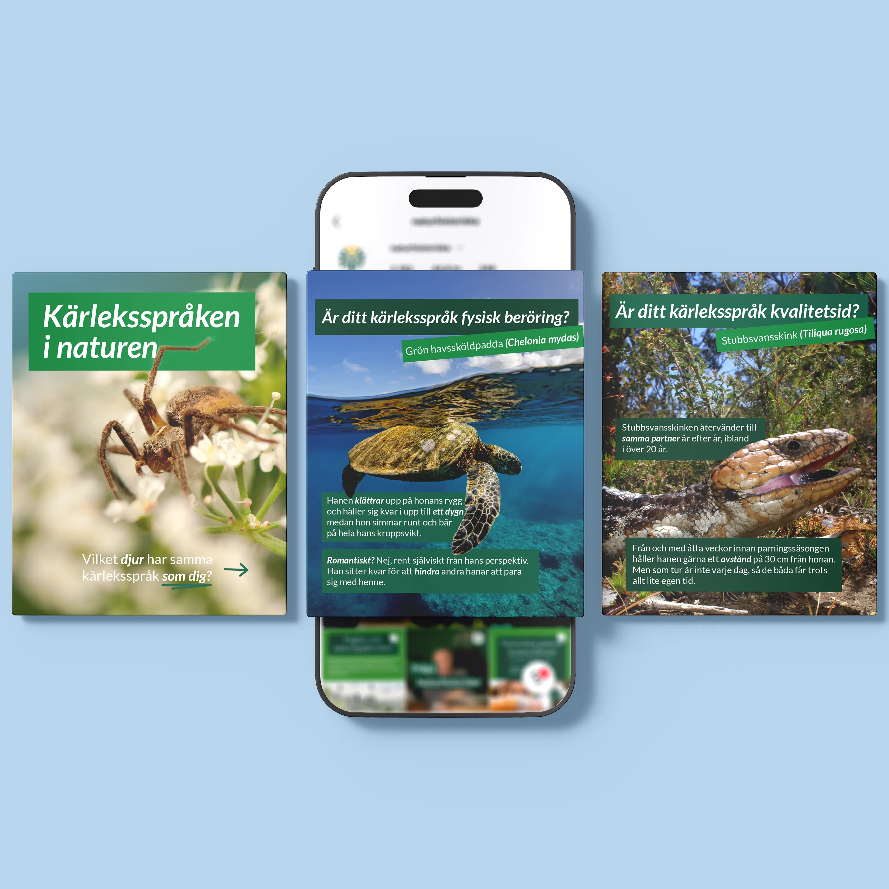

Tre ska bli nollSe projekt →
KunskapsinläggSe projekt →
Fråga naturhistoriskaSe projekt →
Abort – steg för stegSe projekt →

Grafiska inläggSe projekt →
Jurrasic Park – NightfallSe projekt →
Pass the ballSe projekt →